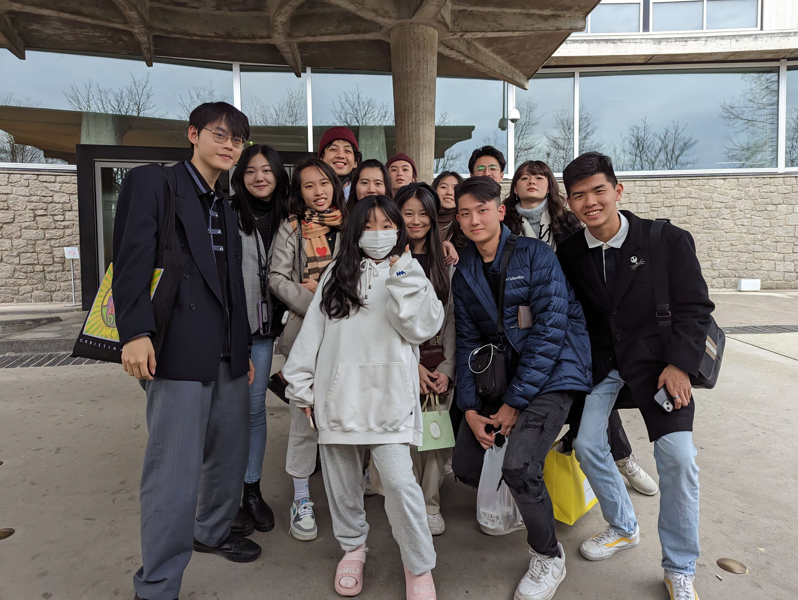
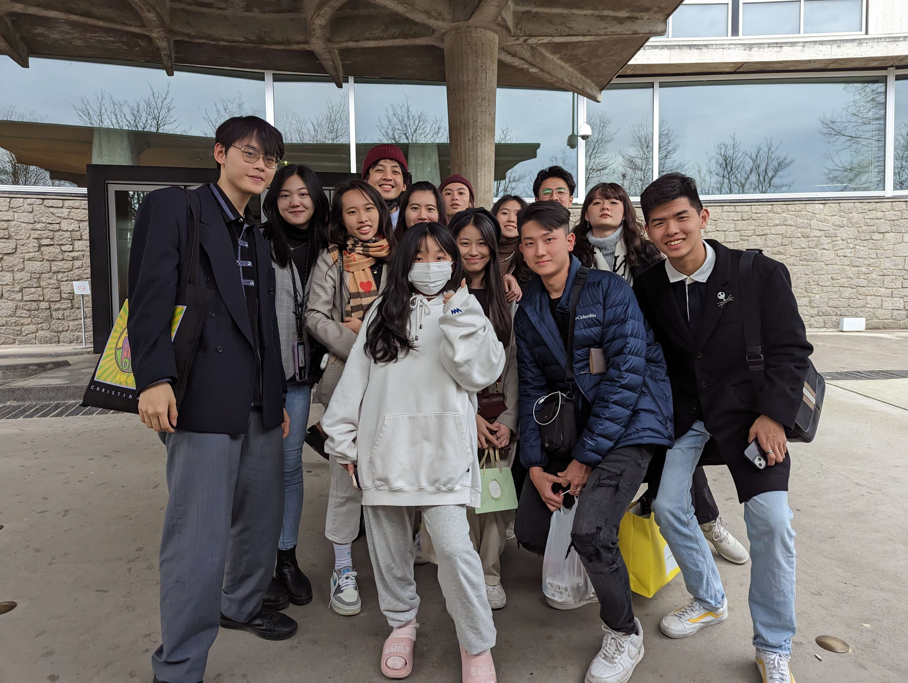

Spring Mock Conference

Spring Mock Conference is a 2-day training conference held annually, joined by some of the best high school Model UN clubs of Taiwan. The organizing team is led by an MST faculty, and jointly formed by voluntary student officers from its annual participating clubs.
A key purpose of Spring Mock is to provide a higher-intermediate level conference at an affordable price. Each committee has therefore been carefully selected to provide a fair and challenging script for every delegate. Our faculty works closely with these participating clubs to not only uphold the academic integrity of the conference, but to also sort through the hassle of managing costs and coordinating services.
As the only conference with all of its participants being capably trained delegates, Spring Mock has the potential of becoming one of the most academically-potent and simulative conferences in Taiwan.


 
